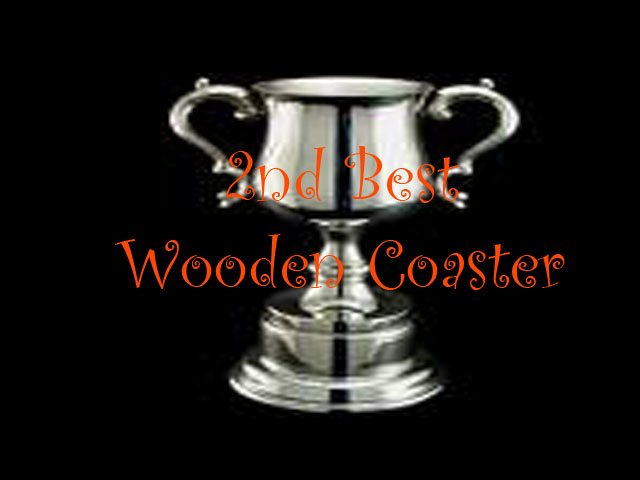

| |
.
Outlaw Run Review

Today, we'll be heading over to Silver Dollar City to check out their newest roller coaster, Outlaw Run. Now Outlaw Run is not like any other wooden coasters (or at least it wasn't when it first opened. I'm very happy to see more rides like this popping up in places such as Illinois, Sweden, and Tennessee). But despite its totally unnatural look, everything in this ride just flows as naturally as it gets. It does not seem like insane beyond vertical turns, sideways airtime, and barrel rolls are unique after seeing Outlaw Run navigate this insanity as quickly and smoothly as it did. All right. So we get in the cars, pull down the lap bars, and we're off!! We roll through a dip out of the station and into the lifthill. The lifthill is going quite fast for a wooden coaster. Not El Toro fast or anything, but it is not taking long at all. There's not much of a view other than trees, but that's ok, because by the time I've said all this, we're at the top going through all the pre-dip goodness. Ready for that first drop. HOLY SH*T!!!! At 81 degrees, this is the steepest drop on any wooden coaster (for now) and man. When sitting in the back row on this thing. EJECTOR AIR!!!! I mean, just DAMN!!!! DAMN!!!! That's a good first drop =). We then head into one of the insane "NEVER ON A WOODEN COASTER!!!!" moments. We head up this sort of curved hill, for some reason, there's this sensation of never slowing down. I mean, I seriously think that we're still running on the original momentum from the first drop (I know we're actually not. I know how physics works, but man does this ride have great pacing). When all of a sudden...SLAM!!!!! We start to straighten out, but then we keep going!! And going!!! And going until we're now beyond 90 degrees!!! Holy Crap!!! This ride has a Strengal Dive. And it is AWESOME!!!! The sudden sharp banking really gives you quite some laterals before straightening on out and dropping back down to the ground. WARNING: NERDY ROLLERCOASTER POINTLESS DEBATE AHEAD. Now there are plenty of coaster enthusiasts out there who are claiming that this is an inversion. Sorry...but no. This is not an inversion. It does not fully go upsidedown (or even remotely feel like doing so). People aren't calling this an inversion on rides such as Silver Bullet. So it shouldn't count here. But whatever. You can classify it however you want. You can call it an inversion. You can call it not an inversion. You can call it a banana for all I care. Just acknowledge its awesomeness. And speaking of awesomeness, lets move back to Outlaw Run. END OF NERDY ROLLERCOASTER DEBATE. We're now roaring towards the ground. We turn around and head into a tiny little hill. Here, we bank the other way before dropping back down and roaring through another low to the ground turn. It's kind of like the first element we just went through, only not banking to the same extent we did the first time. But yeah, its still roaring fast, roaring strong, and provides another crazy set of laterals. We roar through another turn, feeling like we never slowed down. Oh, look. A small little hill. Well better go through it and...OH MY GOD!!!! EJECTOR AIR!!! This ride just gets crazier and crazier as it goes on. We roar on up through another banked hill. Sweet more crazy laterals. We then drop back down and just speed along. We then bank again, head down a small turn before heading straight into an airtime hill. Now this sounds just dandy and all. Except I forgot to mention one teeny tiny little detail. WE HAVEN'T UNBANKED YET!!! We're still completely on our sides, and here we are. Heading through this airtime hill. SIDEWAYS AIRTIME!!!! HOLY CRAP!!!! I can not tell you just how insane the whole prospect is of sideways ejector air. I literally can not think of a feeling like this on any other coaster (for now). We then head through another turn, gradually beginning to unbank until we end up at another tiny little airtime hill. Well, get ready to leave your...THUD!!! Too late. We've already been ejected. And now, it comes time for the grand finale. The part you've seen in all the trailers and promotional photos. The Double Barrel Roll!! We start to head uphill and just start flipping. We make it through the barrel roll and head into the second one. Your head just starts spinning and everything is getting dizzy. In the middle of the second barrel roll, as you're starting to untwist, you just sharply turn to the right and head straight into the brake run, all the while, our heads are still spinning from the insanity of the barrel rolls. Man, just man. That has to be one of the craziest coasters out there. I mean, it is just INSANE!!! It never slows down, the airtime is STRONG, the laterals are EVEN STRONGER, and the barrel rolls are both dizzying, compeletly natural, and a really creative way to get us up the hill to the station. I mean, the ride is just so well designed, both in insanity and in blending in with Silver Dollar City. Hell, a local newspaper even interviewed us about how insane we thought the ride was. Filming the ride is incredibly difficult without a backstage tour, so my Outlaw Run shots are limited. But it just feels so good and natural in Silver Dollar City. This ride is meant to be here and is one of the best rides in the country. Get out to Silver Dollar City and ride it. You won't regret it one bit.
10/10
Location: Silver Dollar City
Opened: 2013
Built by: Rocky Mountain Coasters
Last Ridden: July 19, 2013

Outlaw Run Photos


Home
|